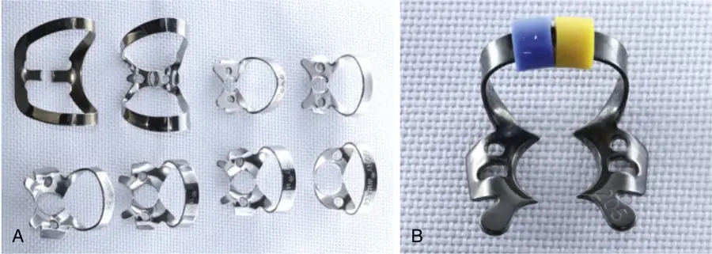

نسخه استخراجشده؛ ترجمه یا تأیید علمی انجام نشده است. وضعیت: captured
برای ترمیم کلاس II مولر اول پایین، کلمپ را روی مولر دوم میگذاری. تاج مولر دوم سالم است و کامل رویش یافته. در کشو کلمپهای 56، 7، 8A و 14A هست. از کدام شروع میکنی؟

شمارهها میان سازندهها فرق دارد؛ آنچه باید بدانی منطق هر گروه است. شمارههای زیر مال سیستم رایج Ivory و Hu-Friedy است.
کلمپ مخصوص مولر کوچک فک صاف و باریک دارد تا دو نقطهی هر فک روی تاج کوچک، درون لاینانگلها، بنشیند. برای مولر سالم و کامل رویشیافته از فک صاف یا کمشیب شروع کن و فستونی عمیق را برای تاج تخریبشده یا نیمهرویشیافته نگه دار.
کلمپی که فکهایش از لاینانگلها گذشته، جای نوار ماتریکس و وج را میگیرد، به لثه فشار میآورد و سیل دور دندان لنگر را سخت میکند.
اشتباه رایج: کلمپ 56 را برای هر مولری برداشتن و وقتی لق شد، ورق را محکمتر کشیدن. کلمپ همهکاره برای بیشتر مولرهاست، نه همه. اگر قانون چهار نقطه یا تست پایداری رد شد، کلمپ دیگری بردار.